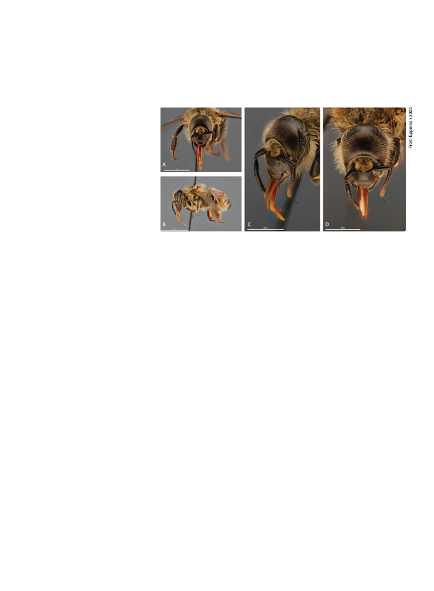

October 2025
1125
O
n May 29, 2024, an “aberrant
honey bee specimen” was in-
tercepted at the Florida Depart-
ment of Agriculture and Consumer
Services (FDACS) White Springs In-
terdiction Station, on I-75 in northern
Florida. This specimen, identified as a
worker, had a single compound eye —
a “cyclops.”1 The specimen was found
deceased among tomatoes in a tractor
trailer full of various agricultural items
originating from Kingsville, Canada.
Unusual morphological abnormali-
ties in honey bees have been reported
previously, including an abnormality
of the compound eye designated as
a “cyclops” phenotype.2 This charac-
teristic has been described from other
[stinging insect species] in the United
States,3,4,5 and Chiapas, Mexico.6 ... It
remains unknown what caused the
death of the aberrant specimen and
whether or not other bees were pres-
ent. Upon close inspection, the com-
pound eye abnormality was sent to
the Division of Plant Industry within
the [FDACS] for further examination.
Apart from the unusual, conjoined
eyes and a smaller head, this worker
honey bee appeared to be typical
(Figure 1) with no other abnormali-
ties detected.
Previously reported eye [struc-
ture] abnormalities of honey bees
include three phenotypes: eyeless,
reduced facet, and cyclops.7 Both
eyeless and reduced facet have only
been reported in drones; the cyclops
phenotype occurs in both drones
and workers.7 Instead of two dis-
tinct compound eyes, in individuals
exhibiting the cyclops phenotype,
the compound eyes merge into a
crescent shape at the top of the
head, with reduced or absent ocelli
[the simple eyes atop the head].3,5
Whether or not the eyes are func-
tional is unclear. Some reports de-
scribed the afflicted specimens en-
gaging in activity such as foraging,5
and others described the specimen as
disoriented.3 The cyclops bee report-
ed herein was found in a shipment of
tomato fruit, suggesting the bee re-
tained some capacity to forage.
The preceding is from “A mor-
phological description of ‘Cyclops’
honey bee,” Epperson et al.1 Consider
also this 1931 description by Dr Er-
win Alfonsus3:
During an experiment on labor
division in a bee colony, a daily
marking of newly emerged bees
with color-dots on the thorax or
abdomen was undertaken. [On] Au-
gust 4, 1930 ... one of these bees
attracted my attention by its unusu-
al manner of locomotion. It moved
slowly as all young bees do, but
backwards instead of forward, in a
manner characteristic of crayfish.
Taking the specimen in my hand I
noticed its extremely narrow face.
An examination under the binocular
microscope revealed the fact that I
was dealing with a freak bee, a bee
with only one compound eye. ... In
the laboratory the specimen con-
tinued to march backwards and ate
in a normal manner the droplets of
honey which I offered it from the tip
of a toothpick. I could not make it
crawl forward even though I placed
the honey a short distance in front
of its head.2
Alfonsus in his continued descrip-
tion notes that the one eye of the cy-
clops bee he observed was about the
same size as a single compound eye of
a normal worker, though it only had
3525 lenses (“ommatidia”) compared
to the normal 5082 (I’m assuming this
was a calculation and not the result of
literally counting them). One won-
ders if a reexamination of the origi-
nal hive these cyclopes came from
(What’s the collective noun for cyclo-
pes? A spectacle?) would reveal more
specimens. Alfonsus obliges us:
Repeated thorough examinations
of the colony, from which the abnor-
mal specimen was obtained, failed
to reveal any bees with similar char-
acteristics.
How rare is this? I would have
thought freakishly rare, but when in
1936 Dr Frank Miller, inspired by Al-
fonsus’ paper, wanted to examine the
brain of a cyclops bee, he was easily
able to receive “several specimens of
Italian bees possessing only one eye
apparently similar to the one Alfon-
sus found” and also “several pupae as
well as ... adults of both workers and
drones.” Miller notes that the ocelli
(simple eyes) though not apparent
from visual examination of the exte-
rior of the head, are there, just hid-
den in the antennal cavities and with
no nerves. And “when viewed from
without, even with the aid of a pow-
erful microscope, there is no evidence
that the eye is the result of the fusion
of the two normal eyes, but [on dis-
section] the presence of two distinct
Cyclops Bees!
by Kris Fricke
Fig. 1 Images of a cyclops bee